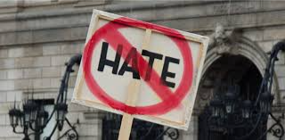

What is hate?
Hate, although a word seemingly understood by most as a strong dislike for something, is a vast, complex term that can be difficult to understand due to the sheer amount of emotions, sentiments, and actions associated with it (Opotow and McClelland 2007). Existing literature has attempted to define hate in many ways, including as “An emotional attitude, a syndrome, a form of generalized anger, a generalized evaluation, a normative judgment, a motive to devalue others, or simply an emotion” (Jasini 2018). Though hate is still not wholly understood by all, its potential to gain traction over time, feed off itself, grow, and spiral into large-scale atrocities on the level of genocide has been observed by all and impacted millions. Examining components of hate not immediately visible can provide a clearer framework for understanding the impetus for such atrocities as genocide
Hate and Justice
Hate and justice are two particularly intertwined concepts that have a close relationship and can often fuel each other. Hateful acts can manifest particularly through the lens of seeking justice; often, hate is perpetrated because the offender perceives an injustice or immorality and feels obligated to rectify the situation through action. Dylann Roof, the gunman who killed nine Black churchgoers at the AME Church in Charleston, for example, was quoted during his trial as saying he “had to” commit the massacre, and that Black Americans are “raping our women and taking over our country” (Ghansah 2017). This sentiment demonstrates the supposed “injustice” that Roof perceived against him and his peers and why he felt the moral obligation to carry out a hate crime so justice could be restored. Conversely, churchgoers and their families felt Roof had committed a gross injustice by carrying out the massacre, and that convicting him was the real way to restore true justice. Dylann Roof is just one example of the murky, intertwined relationship between justice and hate; different groups feel different actions as perceived injustices and thus are motivated to seek justice from starkly different viewpoints. Ultimately, Dylann Roof’s massacre demonstrates how hate can be used as a tool to seek justice, a framework through which genocide can also be analyzed.
Hate and Genocide
The vast, complex nature of hate as not only an emotion, but a method of attaining justice is evident among instances of genocide. The current Israel-Hamas conflict is an appropriate example of how hate and justice ideas can manifest into genocide. Massive injustices have been felt by both parties, which has bred collective hatred towards each opposite group for decades and eventually culminated into actions many have deemed genocidal. At the core of the Israel-Hamas conflict is the obligation Israelis and Palestinians both feel on behalf of their people to fight the injustices they have faced from their oppressors.